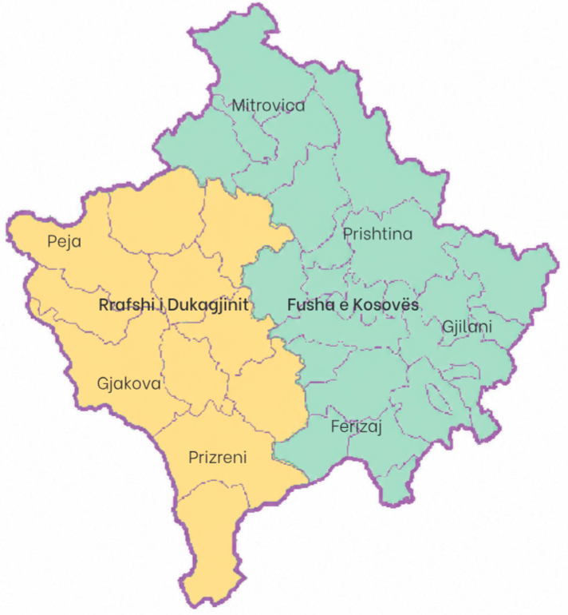

Vendi ku jetoj
Rajonet e Kosovës
Situata 1.
Luna dhe Lisi janë shokë të mirë. Ata vendosën të mësonin mësimin “Rajonet e Kosovës”, në shtëpinë e Lisit, sepse nëna e tij është mësuese gjeografie. Të gjithë nxënësit e duan shumë mësuesen Lirikë, sepse ajo shpjegon mësimin përmes lojës.
Mësuesja Lirikë kishte përgatitur hartën e Kosovës, ku një pjesë të saj e kishte ngjyrosur me të kaltër e një pjesë me të verdhë. Ajo shpjegoi se Kosova është e ndarë në dy rajone: Fusha e Kosovës dhe Rrafshi i Dukagjinit. Ajo vazhdoi duke iu treguar se Kosova ka shtatë qendra rajonale. Mori etiketat me emra dhe i vendosi tri në Rrafshin e Dukagjinit: Gjakova, Peja dhe Prizreni, kurse katër të tjera në Fushën e Kosovës: Ferizaji, Gjilani, Mitrovica dhe Prishtina. Etiketën me emrin e Prishtinës e kishte me ngjyrë të kuqe, që të dallohej nga qendrat e tjera rajonale, sepse Prishtina është kryeqyteti i Kosovës.
Luna dhe Lisi u kënaqën shumë. - Nuk do t’i harrojmë asnjëherë këto që mësuam sot, - thanë ata.
